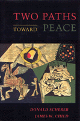

<body bgcolor="#FFFFFF" text="#000000" link="#0000FF" vlink="#CC0000" alink="#CC0000"><center><hr width="350" size="1" align="center" noshade>An advocate of minimum justified violence and a pacifist engage in a dialogue about the uses and abuses of violence<hr width="350" size="1" align="center" noshade><p><a href="https://cdcshoppingcart.uchicago.edu/Cart/ChicagoBook.aspx?ISBN=9780877228820&&PRESS=temple" target="_top">Buy this book!</a> | <a href="https://cdcshoppingcart.uchicago.edu/Cart/Cart.aspx?PRESS=temple" target="_top">View Cart</a> | <a href="https://cdcshoppingcart.uchicago.edu/Cart/Cart.aspx?PRESS=temple" target="_top">Check Out</a></p><p></p></center><!--none//--><h1>Two Paths Toward Peace</h1>
<h3>James W. Child and Donald Scherer</h3>
<P>cloth 0-87722-882-5 $61.50, Jan 92, <FONT COLOR=#990033>Out of Stock Unavailable</FONT>
<BR> 271 pp
</P><BLOCKQUOTE><I>"I became more and more impressed with the directness with which the authors face difficult issues, and their openness and objectivity in responding to one another�s arguments."</I>
<br>&#151<b>Robert L. Holmes</b>, University of Rochester<I></I></BLOCKQUOTE>
<p>What makes violence bad? Is peace merely the absence of war? Is non-violence anything more than not acting violently? When, if ever, is violence justified? Can violence stop violence? These are among the difficult issues that are grappled with in the uniquely structured <I>Two Paths Toward Peace</I>. In this book, an advocate of minimum justified violence, Child, and a pacifist, Scherer, engage in a dialogue about the uses and abuses of violence in the contemporary world.
<p>Scherer begins the exchange with a thoughtful and coherent explanation of traditional pacifism and an introduction to a new conception of pacifism&#151teleological pacifism&#151which was espoused
by Gandhi. Child responds by assessing the cost of uncritical pacifism, particularly in the 20th century. The authors then embark on a detailed three-part inquiry: dissecting first the concept of justified violence; then the concept of pacifism; and finally, exploring the interplay between these two concepts.
<BR>&nbsp;<h2>Contents</h2><P>
<p>Acknowledgment
<br>Introduction
<br>The Pacifist�s Vision &#150 Donald Scherer
<br>The Cost of Uncritical Pacifism &#150 James W. Child
<br>Two Paths to Peace &#150 James W. Child and Donald Scherer
<p><b>Part I: A Critical Examination of Justified Violence</b>
<br>1. A Defense of Justified Violence &#150 James W. Child
<br>2 . A Critique of Justified Violence &#150 Donald Scherer
<p><b>Part II: A Critical Examination of Pacifism</b>
<br>Introduction
<br>3 . Problems with Traditional Forms of Pacifism &#150 James W. Child
<br>4. Creating a New Pacifism &#150 Donald Scherer
<p><b>Part III: The Moral and Metaphysical Foundations of Pacifism and the Justified Violence View</b>
<br>5 . On Justifying Violence &#150 James W. Child
<br>6. A Viable Pacifism &#150 Donald Scherer
<p><b>Part IV: The Work of Peacemaking</b>
<br>Introduction
<br>7. On Avoiding War &#150 James W. Child
<br>8. Toward an Enriched Peace &#150 Donald Scherer
<p>Afterword &#150 James W. Child
<br>Notes
<br>Index
</P><BR>&nbsp;<H2>About the Author(s)</H2>
<P><b>James W. Child</b> is Associate Professor of Philosophy and Senior Research Fellow at the Center for Social Philosophy and Policy, Bowling Green State University.</P>
<P><b>Donald Scherer</b> is Professor of Philosophy at Bowling Green State University and the editor of <I><a href="730_reg.html" target="_top">Upstream/Downstream: Issues in Environmental Ethics</a></I> (Temple).</P>
<BR><H2>Subject Categories</H2>
<p><A HREF="/tempress/philosophy.html" TARGET="_top">Philosophy and Ethics</a>
</p>
<p align="center"><a href="https://cdcshoppingcart.uchicago.edu/Cart/ChicagoBook.aspx?ISBN=9780877228820&&PRESS=temple" target="_top">Buy this book!</a> | <a href="https://cdcshoppingcart.uchicago.edu/Cart/Cart.aspx?PRESS=temple" target="_top">View Cart</a> | <a href="https://cdcshoppingcart.uchicago.edu/Cart/Cart.aspx?PRESS=temple" target="_top">Check Out</a></p><p><font face="Arial" size="1"><a href="copyright.html" onMouseOver="window.status='Web Copyright Policy';return true;" onMouseOut="window.status=''" title="Web Copyright Policy">&copy;</a> 2015 <a href="http://www.temple.edu" target="new" onMouseOver="window.status='Link to Temple University home page';return true;" onMouseOut="window.status=''" title="Link to Temple University home page">Temple University</a>. All Rights Reserved. http://www.temple.edu/tempress/titles/861_reg.html</font></p>